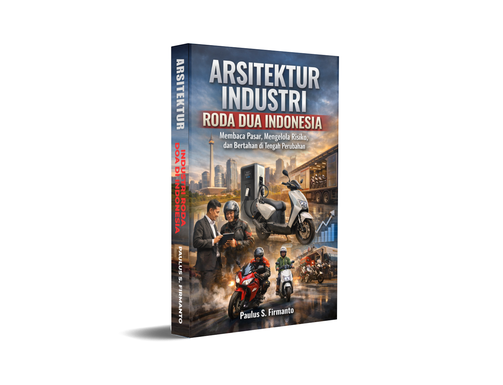
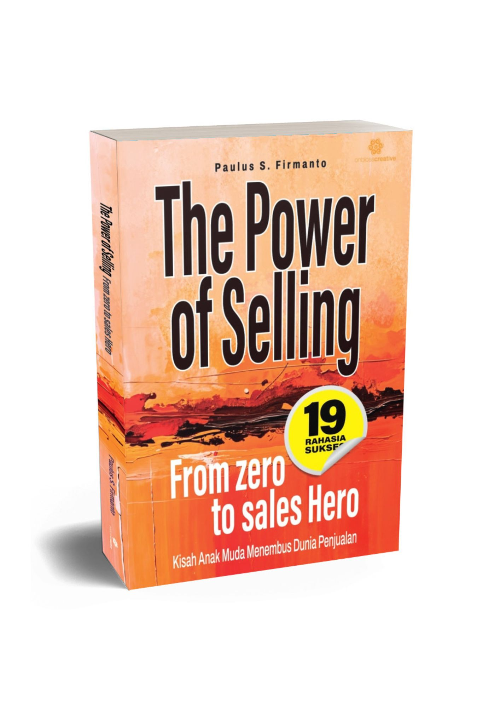
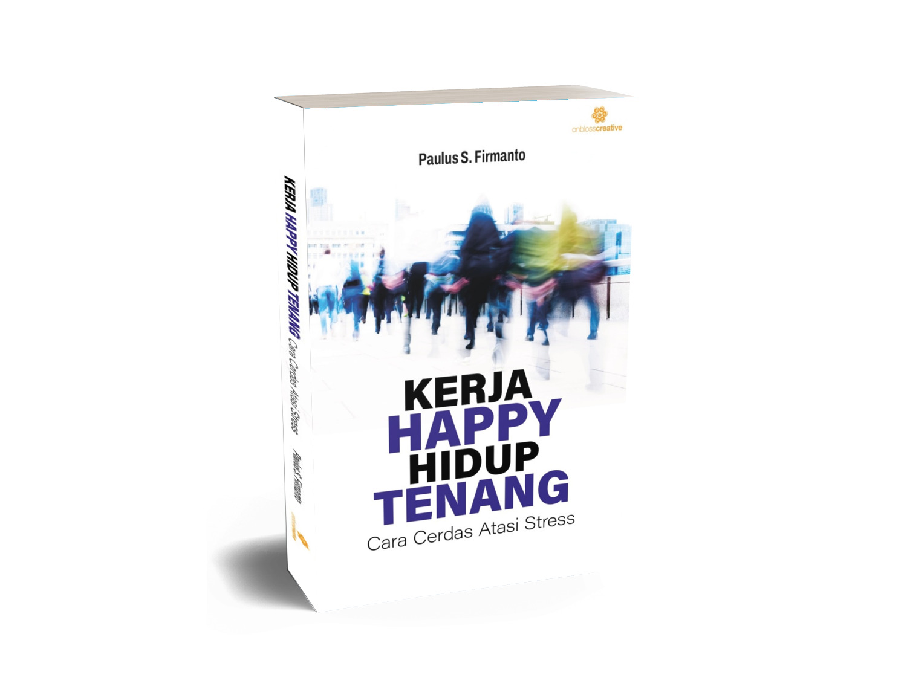
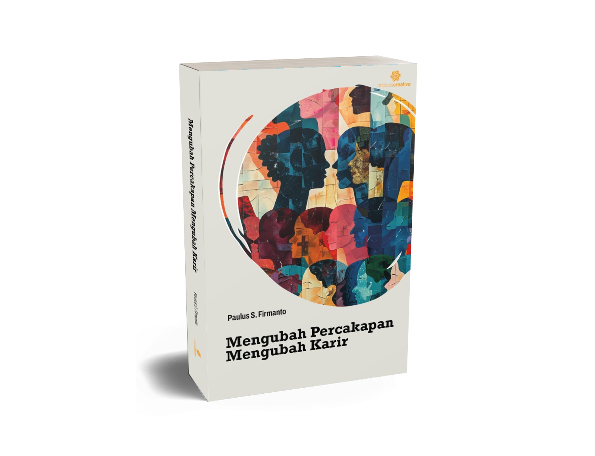
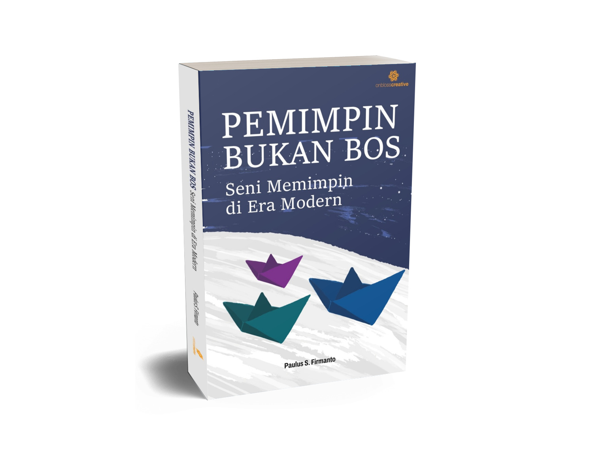
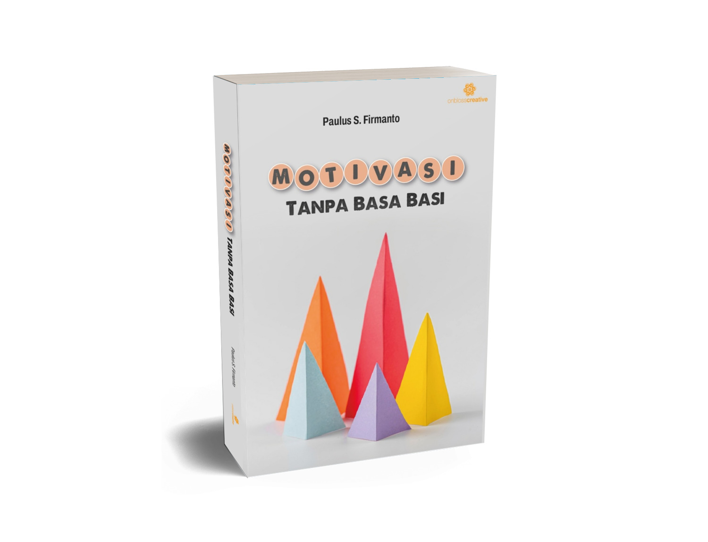
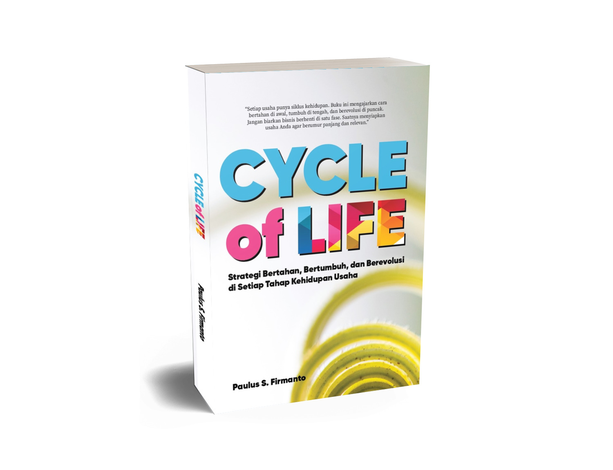

Business Strategy & Market Development
Market positioning, growth opportunities, go-to-market strategy, and business model development.
01 / ABOUT
I am a business leader and strategic advisor with a career spanning Indonesia's automotive, distribution, and business development sectors.
My professional journey includes senior leadership roles at Yamaha Motor Indonesia and Suzuki Indomobil Sales, entrepreneurial leadership, and advisory work with business owners and leadership teams.
I focus on understanding the real condition of a business, identifying the levers that matter, and translating strategy into practical action — with sustainable profitability as the destination.
Start a conversation ↗02 / WHAT I BRING
Connecting commercial ambition with the capabilities, partnerships, and execution needed to make it happen.
Market positioning, growth opportunities, go-to-market strategy, and business model development.
Commercial planning, budget management, sales effectiveness, and market execution.
Dealer ecosystems, channel productivity, partner development, and distribution transformation.
Business health assessment, revenue and margin improvement, financial discipline, and practical roadmaps.
Building productive collaboration among principals, distributors, dealers, financiers, and service partners.
Leadership development, capability building, mentoring, and customer-community engagement.
03 / PROFESSIONAL JOURNEY
Progressive roles across sales, marketing, distribution, and business advisory.
Founded a business advisory and transformation practice supporting business owners and leadership teams across automotive, distribution, and related sectors. Visit AIS Training & Consulting ↗
Led business operations and commercial growth initiatives focused on revenue generation, client acquisition, and channel productivity.
Led national sales and marketing strategy, budget management, commercial planning, and sales execution.
Held progressive leadership responsibilities in regional sales, national marketing, dealer network development, and community management.
Sales Engineer — PT Friassha (1991–1993)
Parts Analyst — United Tractors (1990–1991)
04 / CONSULTING TRACK RECORD
A selection of organizations associated with consulting, training, and professional engagements through AIS Training & Consulting and relevant career experience.
Working across different sectors brings a broader understanding of business realities — from market development and distribution to organizational capability, commercial performance, and transformation.
Founded by Paulus S. Firmanto, AIS is the institutional platform for business consulting, advisory, training, and organizational development. Explore the AIS website for more information about its services and activities.
Hyundai Motor · Putera Persada Nusantara · Panamas · Alfa Retailindo · Cahaya Yamaha · Alfa Scorpii Medan · Aneka Kimia Raya · Arista Group · Yamaha Motor Kencana Indonesia · Agro Kusuma Wisata
Armada Finance · Telkomsel · Telkom · Swabina Gatra · RS Petrokimia Gresik · Pelabuhan Indonesia III · Serasi Autoraya (TRAC) · Badan Pengendali Dampak Lingkungan Jawa Timur · Plan Indonesia · Perum Perhutani · RSUP Dr. Kariadi
Bank Rakyat Indonesia · Bank Jatim · Bank Negara Indonesia · Bank Jateng · BPR BAPAS 69 Magelang · Bank Maspion · Bank Mandiri · BPR Guna Daya · BPR Gunung Kawi
Bogasari Flour Mills · Semen Gresik · Panggung Electric · Garam · Dupont Indonesia · Matsushita Lighting Indonesia · Sorini Corporation · Ecco Indonesia · Garuda Food · Teckwah Asia – Albea · Karya Mitra Sentosa · CJ Feed Jombang · SAMI · MAS Sumbiri · John’s Glove Factory · Wings Surya · Surya Multi Indopack · Siantar Madju · Hartono Wira Tanik · HM Sampoerna · PAL Indonesia · Philips Ralin Electronic · Smelting · Tanjindo Subur Prima · Gudang Garam · Bentoel Group · Karya Dibya Mahardhika · Sriboga Flour Mills · Ecco Oil · Varia Usaha Beton
UK Petra · Universitas Adi Buana · Universitas Bina Nusantara · Universitas Surabaya · ITS · Unika Soegijapranata
The names above are presented as a selected organizational track record based on the supplied reference. The list does not imply that every engagement was contracted directly by AIS or personally led by Paulus S. Firmanto. Specific project references and client logos can be added where appropriate and authorized.
05 / INDUSTRY PERSPECTIVE
The future of mobility will be shaped by how well the entire business system works together.
From demand-driven distribution and customer experience to aftersales, parts, financing, charging, and retention, sustainable growth depends on a connected ecosystem and capable partners.
06 / BOOKS & WRITING
Books on business, automotive, leadership, selling, career development, and personal growth.

Membaca Pasar, Mengelola Risiko, dan Bertahan di Tengah Perubahan
Pasar sepeda motor Indonesia sangat besar, tetapi keberhasilan tidak cukup ditentukan oleh produk. Buku ini membahas karakter konsumen, perbedaan cluster pasar, strategi produk dan komunikasi, pembiayaan, distribusi, jaringan dealer, aftersales, hingga transisi motor listrik. Berangkat dari pengalaman lebih dari tiga dekade di industri otomotif, buku ini membantu pelaku industri memahami hubungan antarelemen yang menentukan kesehatan ekosistem.
Pertumbuhan yang sehat dimulai dari kemampuan membaca pasar dan mengelola risiko, bukan sekadar mengejar volume.

From Zero to Sales Hero · 19 Kunci Sukses Meraih Puncak Karir
Melalui perjalanan Joko, seorang pemuda yang awalnya tidak bercita-cita menjadi salesman, buku ini menunjukkan bagaimana dunia penjualan dapat menjadi jalan untuk membangun karakter dan karier. Pembaca diajak mempelajari mindset positif, menghadapi penolakan, memahami kebutuhan pelanggan, melakukan presentasi, serta mengembangkan komunikasi dan negosiasi. Perjalanan berlanjut dari salesman menjadi supervisor hingga manajer, dengan pembahasan coaching, strategi, dan kepemimpinan tim.
Sales bukan sekadar menjual produk, tetapi membangun kemampuan dan membuka peluang karier.

Cara Cerdas Atasi Stres di Kantor
Deadline, tuntutan atasan, tekanan pekerjaan, dan hubungan dengan rekan kerja merupakan bagian dari kehidupan profesional. Buku ini menawarkan cara yang lebih sehat untuk mengelola stres, mengatur waktu dan energi, membangun mindset positif, menghadapi konflik, serta menjaga keseimbangan kerja dan kehidupan pribadi. Dilengkapi cerita, checklist, dan langkah praktis yang dapat diterapkan oleh fresh graduate maupun profesional berpengalaman.
Tetap produktif itu penting, tanpa mengorbankan kebahagiaan dan kualitas hidup.

Real Talk, Real Impact
Setiap percakapan dapat memengaruhi hubungan, kerja sama, dan perkembangan karier. Berdasarkan modul edukasi Real Talk, Real Impact, buku ini membahas cara menyampaikan kritik secara konstruktif, menerima feedback tanpa defensif, dan mengubah percakapan sulit menjadi kesempatan untuk belajar. Dengan bahasa ringan dan contoh situasi nyata, isinya relevan bagi manajer, karyawan, pemimpin komunitas, dan siapa saja yang ingin berkomunikasi lebih efektif.
Karier juga dibangun melalui cara kita berbicara, mendengarkan, dan terhubung dengan orang lain.

Seni Memimpin di Era Modern
Kepemimpinan sejati bukan tentang kekuasaan atau banyaknya perintah, melainkan kemampuan membangun kepercayaan, menginspirasi, memberdayakan tim, dan memberi teladan. Buku ini mengulas praktik kepemimpinan modern: komunikasi efektif, mengelola perubahan, delegasi, pengambilan keputusan, pengaruh positif, dan pola pikir strategis. Disampaikan secara praktis untuk siapa saja yang ingin mencapai target sekaligus menumbuhkan manusia dan tim.
Pemimpin sejati tidak hanya mengarahkan orang untuk bekerja, tetapi menginspirasi mereka untuk maju bersama.

Membangun Motivasi yang Tahan Lama di Tempat Kerja
Apa yang membuat seseorang tetap bersemangat dan memberikan kontribusi terbaik? Buku ini mengajak pembaca melihat motivasi lebih dalam daripada sekadar hadiah dan hukuman. Dengan menggabungkan teori Maslow dan Herzberg, motivasi intrinsik dan ekstrinsik, serta pendekatan SMART Goals, buku ini memberi panduan bagi pemimpin dan manajer untuk membangun tujuan yang jelas, rasa dihargai, dan lingkungan kerja yang sehat.
Bangun lingkungan yang membuat orang ingin bertumbuh dan berkontribusi, bukan hanya bekerja lebih keras.

Life Cycle of Business · Seni Menjaga Bisnis agar Tak Pernah Mati
Bisnis, sebagaimana manusia, memiliki siklus kehidupan: lahir, bertumbuh, matang, hingga menghadapi risiko kemunduran. Berangkat dari pengalaman membangun bisnis sejak 2008 dan pembelajaran Business Mastery bersama Anthony Robbins, buku ini membantu pembaca mengenali fase usahanya, memperkuat fondasi, membangun sistem, mengembangkan tim, dan merespons perubahan. Ditujukan bagi pelaku UMKM, wirausaha, dan pemimpin bisnis.
Bisnis yang sehat tahu kapan harus bertumbuh, beradaptasi, dan bertransformasi.
Seven featured titles are presented here. Availability may vary by title and sales channel.
07 / THOUGHT LEADERSHIP
A practical point of view shaped by decades of working with businesses, people, and changing markets.
My writing and mentoring explore how markets evolve, why distribution systems succeed or fail, how leaders build capable teams, and how businesses adapt through different stages of growth.
Trainer & Mentor — MACC Institute
PT Humani Santika Indonesia · Mentoring senior professionals in leadership transition, advisory, and consulting capabilities.
LET'S CONNECT
Sometimes, all you need is someone to talk to, share ideas with, and help you see things from a different perspective.
Saya terbuka untuk berdiskusi, berbagi pengalaman, dan memberikan pendampingan bagi siapa saja yang membutuhkan. Tentang tantangan bisnis, pengembangan karier, mencari perspektif baru, atau sekadar bertukar pikiran.
Butuh teman diskusi juga boleh! Tidak harus selalu tentang pekerjaan atau bisnis. Mari terhubung dan bertumbuh bersama.
Punya ide, pertanyaan, tantangan, atau ingin sekadar ngobrol? Silakan hubungi saya. Saya senang bisa bertukar pikiran.
Let's Talk on WhatsApp ↗ psfirmanto@gmail.com ↗PHONE +62 877 8488 8688
LINKEDIN linkedin.com/in/psfirmanto ↗
LOCATION Jakarta, Indonesia